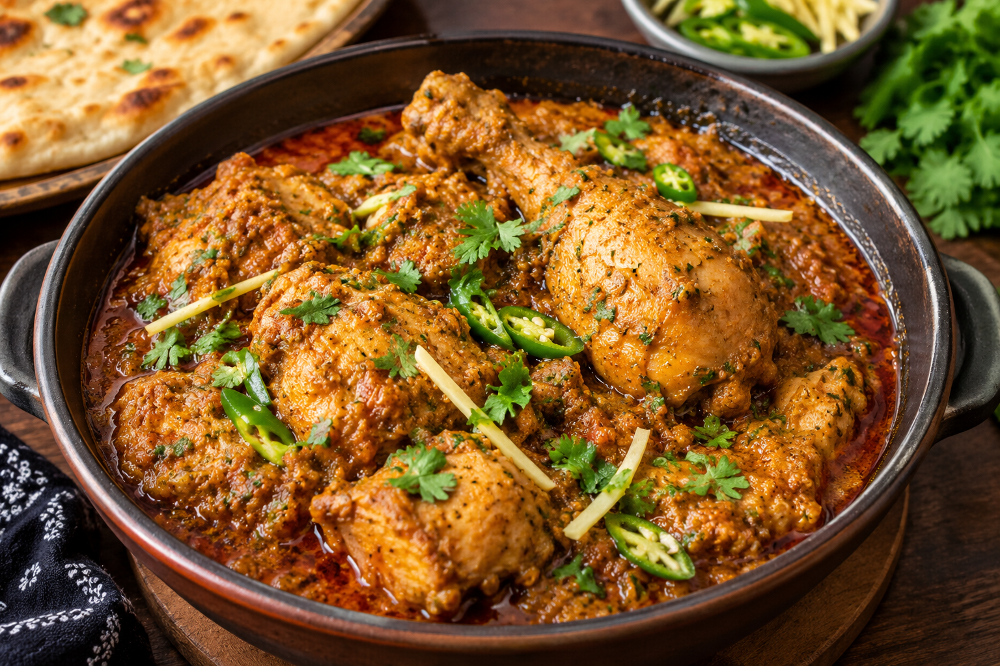

← Back to Recipes
Lahori Chicken
A flavorful Pakistani-style chicken curry inspired by the rich and spicy flavors of Lahore.

About Lahori Chicken
Lahori Chicken is a delicious Pakistani-style chicken dish made with tender chicken, tomatoes, yogurt and aromatic spices. It has a rich, flavorful gravy and is perfect for a family lunch or dinner.
Ingredients
- 500g chicken
- 2 medium tomatoes, chopped
- 1 medium onion, finely sliced
- 1/2 cup yogurt
- 2 tablespoons cooking oil
- 1 tablespoon ginger-garlic paste
- 1 teaspoon red chili powder
- 1/2 teaspoon turmeric powder
- 1 teaspoon coriander powder
- 1/2 teaspoon cumin powder
- 1/2 teaspoon garam masala
- Salt to taste
- 2 green chilies, sliced
- Fresh coriander for garnish
How to Make Lahori Chicken
- Heat oil in a pan and sauté the sliced onion until lightly golden.
- Add ginger-garlic paste and cook for about one minute until fragrant.
- Add the chicken and cook on medium heat until it changes color and becomes lightly golden.
- Add chopped tomatoes, red chili powder, turmeric, coriander powder, cumin powder and salt.
- Cover and cook until the tomatoes become soft and the chicken is tender.
- Whisk the yogurt and gradually add it to the chicken while stirring continuously.
- Cook until the gravy becomes rich and the oil begins to separate.
- Add green chilies and garam masala. Cook for another 2–3 minutes.
- Garnish with fresh coriander and serve hot.
Serving Suggestion
Serve Lahori Chicken with naan, roti or fragrant basmati rice. A fresh salad and raita make it even more delicious.
Cooking Tips
- Use fresh tomatoes for a naturally rich gravy.
- Cook the chicken well before adding the yogurt.
- Add yogurt gradually to help prevent curdling.
- Adjust the spices according to your taste.